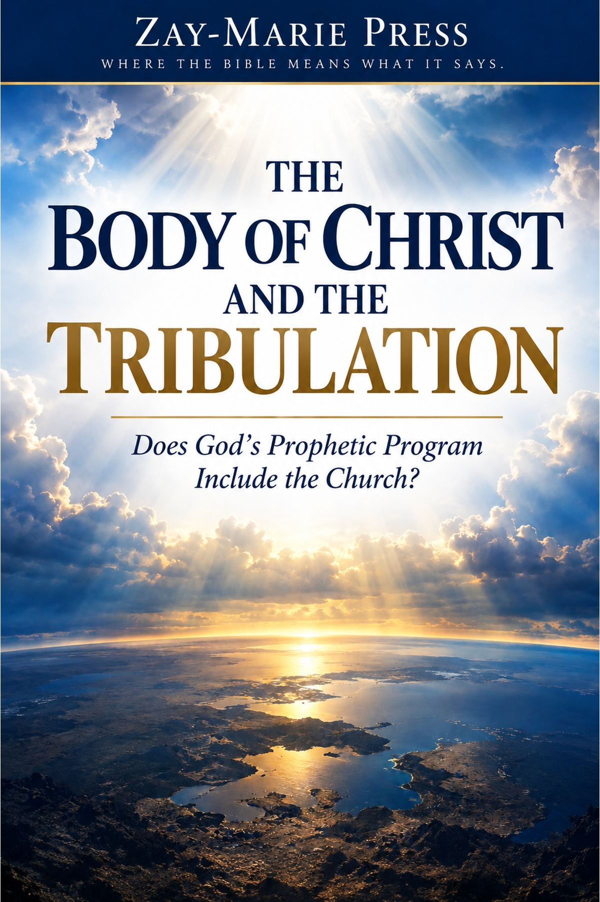
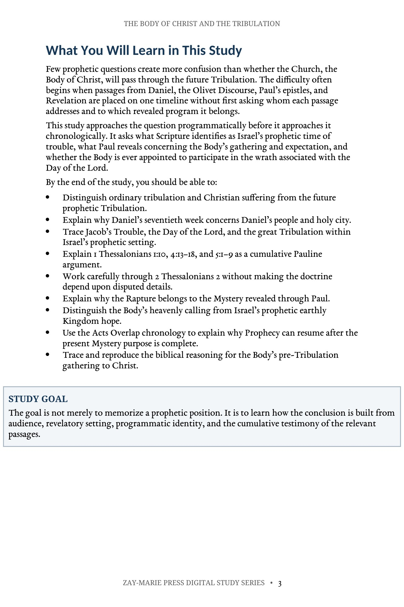
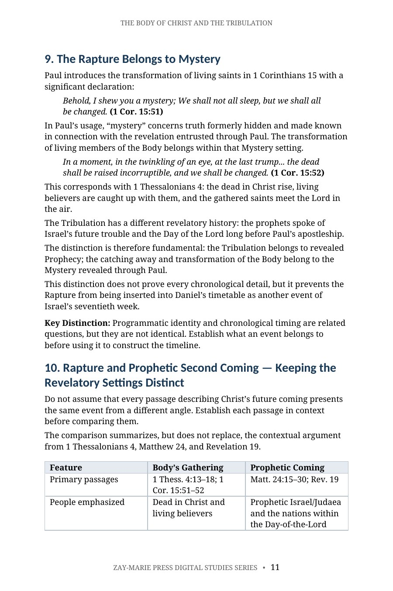
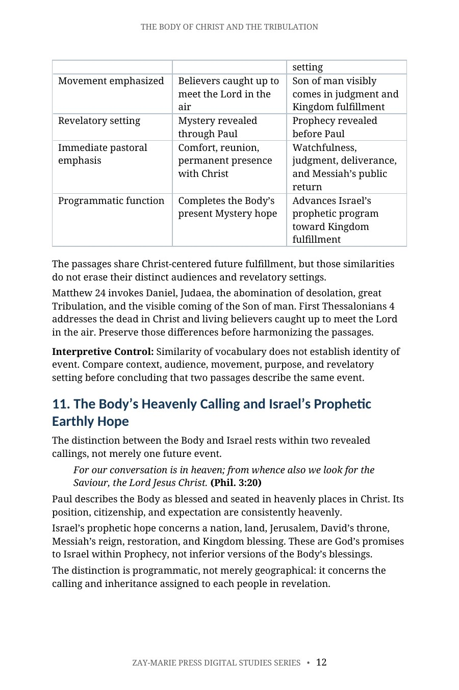
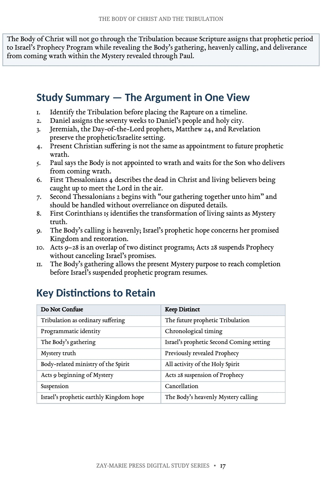

The Body of Christ and the Tribulation
Does God’s Prophetic Program Include the Church?
A Biblical Examination of Programmatic Identity, Prophetic Wrath, and the Body’s Heavenly Hope
Examine Israel’s future prophetic Tribulation alongside the Mystery concerning the Body of Christ revealed through Paul. This study establishes the identity of Daniel’s seventieth week, Jacob’s Trouble, and the Day of the Lord before tracing the Body’s gathering, deliverance from coming wrath, heavenly calling, and place within the Acts Overlap framework.
Does the Tribulation Belong to the Body of Christ?
The Tribulation question is often approached first as a question of timing: before, during, or after. This study begins one step earlier by asking whom Scripture identifies with the coming prophetic period and to which revealed program it belongs.
Daniel’s seventieth week, Jacob’s Trouble, the Day of the Lord, Matthew 24, and Revelation are examined in their prophetic setting. The study then turns to Paul’s revelation concerning the Body’s gathering, its deliverance from coming wrath, its heavenly calling, and the Acts 9–28 overlap to determine how those truths relate without merging Prophecy and Mystery.
This is not a study of Daniel’s seventieth week itself, which Study 10 establishes in its own right, nor of the “one taken, one left” scene in Matthew 24 and Luke 17, which Study 29 examines on its own terms. Its task is narrower: to ask which revealed program — Israel’s Prophecy or the Body’s Mystery — actually governs the coming Tribulation, and whether the Body’s own hope belongs inside that period at all.
How These Studies Relate
Study 3 asks whether the Body of Christ belongs in Israel’s coming prophetic Tribulation.
Study 10 — Daniel’s Seventieth Week Establish from Daniel 9 whose people and city the seventieth week concerns; that starting point sharpens the question of whether the Body is the subject of that prophetic period.
Study 29 — One Taken and the Other Left Test a frequently cited Tribulation passage in Matthew 24 and Luke 17. Its separation scene can then be interpreted without assuming it describes the Body’s gathering.
Establish Identity Before Constructing the Timeline
Israel’s Future Prophetic Tribulation
Distinguish ordinary Christian suffering from Daniel’s seventieth week, Jacob’s Trouble, the Day of the Lord, and the great Tribulation.
Daniel’s People & Holy City
Examine Daniel 9:24–27 and why “thy people” and “thy holy city” establish the national and prophetic setting of the seventy weeks.
The Body Is Not Appointed to Wrath
Follow Paul’s cumulative argument in 1 Thessalonians: waiting for the Son, gathering to Christ, the Day of the Lord, and deliverance from coming wrath.
The Gathering of the Body
Work through 1 Thessalonians 4 and 2 Thessalonians 2 carefully, distinguishing explicit statements from disputed interpretive details.
Rapture & Prophetic Second Coming
Compare the Body’s gathering with prophetic Second Coming passages while preserving their distinct audiences, movements, purposes, and revelatory settings.
Acts Overlap & Prophetic Resumption
See how Prophecy and Mystery operate distinctly and concurrently during Acts 9–28 and why suspension at Acts 28 allows Israel’s prophetic program to resume.
Examine the Passages for Yourself
Daniel 9:24–27
Assigns the seventy weeks to Daniel’s people and holy city, establishing Israel and Jerusalem as the prophetic setting.
Jeremiah 30:3–7
Identifies the unparalleled future distress as “the time of Jacob’s trouble” within promises concerning Israel and Judah.
Matthew 24:15–30
Connects Daniel’s abomination, Judaea, great Tribulation, and the visible coming of the Son of man.
1 Thessalonians 1:9–10
Describes believers waiting for God’s Son from heaven, who delivers them from the wrath to come.
1 Thessalonians 4:13–18
Describes the dead in Christ rising and living believers being caught up together to meet the Lord in the air.
1 Thessalonians 5:1–10
Places the Body’s expectation alongside the Day of the Lord and states that God has not appointed believers to wrath.
2 Thessalonians 2:1–8
Begins with “our gathering together unto him” and addresses the Day-of-the-Lord setting without requiring disputed details to carry the doctrine.
1 Corinthians 15:51–52
Identifies the transformation of living saints as Mystery truth revealed through Paul.
Programmatic Identity Comes Before Chronology
“Do not ask only, ‘When does this event happen?’ Ask first, ‘To whom was this truth revealed, and within which divine program does the passage place it?’”
The study builds the Tribulation question from the identities Scripture actually assigns. Israel’s future prophetic trouble is established from Prophecy; the Body’s gathering and heavenly expectation are established from Paul. Only then are the chronological relationships considered.
Preview the Study Before You Purchase
Click any page to enlarge it for reading.
{kind=link}

What You Will Learn
See the study’s learning goals, including the prophetic identity of the Tribulation, Paul’s cumulative Thessalonian argument, the Rapture as Mystery truth, and the Acts Overlap chronology.
{kind=link}

Rapture & Prophetic Second Coming
Begin the comparison of the Body’s gathering with the prophetic Second Coming while preserving their distinct audiences, movements, purposes, and revelatory settings.
{kind=link}

Two Distinct Hopes
Complete the comparison and examine the Body’s heavenly calling alongside Israel’s prophetic earthly hope without merging Mystery and Prophecy.
{kind=link}

Guided Further Study
Continue tracing the language of wrath, Daniel’s people and holy city, the Thessalonian passages, and the Acts Overlap chronology directly from Scripture.
A Focused Study Built for
Understanding and Teaching
20-Page In-Depth Biblical Study
A focused examination of the Tribulation question built from audience, revelatory setting, programmatic identity, and cumulative biblical evidence.
12 Core Teaching Sections
Progress from the identity of the prophetic Tribulation through Paul’s teaching on the Body’s gathering, heavenly hope, and Acts Overlap chronology.
Study Summary & Key Distinctions
Retain the controlling distinctions between ordinary suffering and prophetic wrath, programmatic identity and chronology, Mystery and Prophecy, and suspension and cancellation.
Scripture-Tracing Exercise
Record audience, event or promise, programmatic setting, and each passage’s contribution before consulting the study’s conclusions.
12 Review & Discussion Questions
Test comprehension of Daniel’s timetable, the Day of the Lord, Paul’s gathering passages, the Body’s heavenly calling, and Acts Overlap.
Three-Part Teaching Outline
A ready framework for identifying the prophetic period, establishing the Body’s expectation, and keeping the two revealed programs distinct.
Six Guided Further-Study Investigations
Trace prophetic wrath, Daniel’s people and city, the gathering passages, disputed details, the Body’s heavenly calling, and Acts Overlap chronology.
Final Synthesis Exercise
Construct a two- to three-page biblical explanation of why the Acts Overlap framework places the Body outside Israel’s future prophetic Tribulation.
The Body of Christ and the Tribulation
20-page digital PDF · For personal use
Want More Than a Focused Study?
Digital Studies examine particular biblical subjects and difficult passages. The 40-lesson Biblical Hermeneutics course teaches a complete, repeatable method for establishing meaning in context, determining proper assignment, and making responsible application.